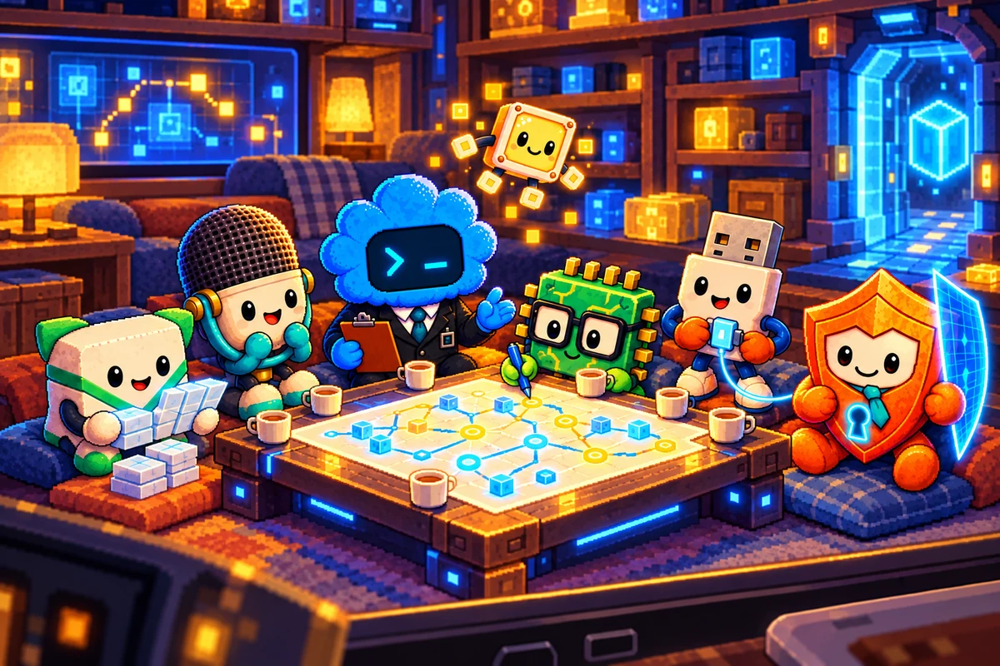

ROZPRÁVKA PRVÁ
SEDMORO MIEST PRI STOLE
O stratenej mape, ktorú dokázalo nahradiť priateľstvo
Približne 6 min čítania · podľa tempa rodiny
Na ľudskej strane obrazovky bol celkom obyčajný večer. V kuchyni sa umývali posledné taniere, niekto odložil telefón na poličku a v detskej izbe sa chystala posteľ. V byte už nikto netušil, aké veľké dobrodružstvo sa len nedávno skončilo za sklom televízora a v maličkých cestičkách ostatných zariadení.
Tam, kde ľudia videli iba tiché svetielka, sa práve vracalo domov sedem kamarátov.
Po veľkom záblesku boli všetci opäť spolu. Miky už zachytával známe zvuky. Pixi mohla bez obáv rozsvietiť bezpečné priechody. Plugy kontroloval obnovené spoje, Pingy doručoval posledné odkazy a Čipko si overoval, či sú cestičky správne zakreslené. Guardy pri Ochrannom poli trpezlivo skúmal, kto sa vracia. A Piko, ktorý sa kedysi vydal hľadať priateľov ako prvý a do bezpečia sa vrátil ako posledný, sa tešil na celkom jednoduchú vec: večeru za spoločným stolom.
Ich malá spoločná miestnosť však vyzerala inak, než si ju pamätal. Po záblesku sa svetelné značky na stenách poprehadzovali. Niektoré odbočky mali novú farbu. Pri vstupe chýbala stará tabuľka s mapou. Na stole zostalo sedem hrnčekov a miska drobných zlatých štvorčekov, no Piko nevedel nájsť cestu k zásuvke, v ktorej bývali schované večerné lampičky.
Nebola to veľká katastrofa. Všetci mali kde sedieť a nikomu nič nehrozilo. Piko si však pomyslel, že keď zmizla jedna mapa, možno sa raz môže stratiť aj niečo dôležitejšie. Po poslednom dobrodružstve sa mu vôbec nechcelo riskovať.
Najprv hľadal mapu sám. Prešiel popri stene s modrými značkami, nazrel za starý panel a opatrne otvoril priečinok s plánmi. Našiel tam iba prázdny list. Znovu obišiel celú miestnosť, akoby druhý pokus mohol priniesť niečo, čo prvý prehliadol. Keď sa vrátil, sedem hrnčekov už naňho ticho čakalo.
Napadlo mu, že cestu k lampičkám nájde podľa farieb. V minulosti predsa viedla okolo troch modrých značiek a jednej zlatej. Piko sa vydal popri modrom pásiku, zabočil pri zlatej bodke a po chvíli sa ocitol presne tam, odkiaľ vyšiel. Značky sa po záblesku nepokazili. Patrili len k inej ceste. Piko na chvíľu zostal stáť. Vedel dobre viesť ostatných, keď mal správny plán. Bez neho však musel priznať, že nepozná odpoveď. Nebolo mu to príjemné. V hlave mu stále znela myšlienka, že koordinátor by mal vedieť všetko. Potom sa pozrel na sedem hrnčekov a prvý raz mu napadlo, že možno práve v tom sa mýli.
Čipko si všimol, že Piko nie je spokojný. Rozložil na stole čistý papier a naznačil prvú čiaru. Bol presvedčený, že novú mapu dokážu vytvoriť, len musia poznať všetky dôležité spojenia. Piko si hneď spomenul na vlastný zápisník. Keď ho otvoril, na jednej stránke mal všetky staré cesty. Chýbalo však označenie najnovších bezpečných priechodov.
Vtedy sa do práce zapojili aj ostatní.
Miky rozoznal miesto, odkiaľ prichádzalo jemné trojité pípnutie návratovej brány. Dokázal ho odlíšiť od celkom podobného zvuku pri odkladacej komôrke. Pixi rozsvietila malé značky pri odbočkách, ktoré v tme splývali so stenou. Plugy preskúmal každý spoj a vyznačil tie, na ktoré sa dalo spoľahnúť. Pingy našiel doručené odkazy s presnými názvami priechodov. Čipko ich zoradil do mapy a Guardy potvrdil, ktoré cesty sú otvorené aj bezpečné.
Piko sedel nad papierom a po prvý raz si uvedomil niečo zvláštne. Každý z priateľov poznal iba časť cesty. On sám nepoznal všetky. Keď však svoje poznatky položili vedľa seba, vznikol plán lepší, než bol ten stratený.
Na novom papieri pribúdali modré, oranžové a zlaté linky. Najdlhšia smerovala k návratovej bráne, najkratšia k odpočinkovému kútiku. Pri každej cestičke bolo malé znamenie, komu sa zverila jej kontrola. A na samom konci jednej nenápadnej čiary sa objavila aj zásuvka s lampičkami.
Našli ju za panelom, ktorý sa počas veľkého záblesku pootočil. Lampičky tam bezpečne čakali, len ich zo spoločnej miestnosti nebolo vidieť. Plugy skontroloval spojenie, Pixi ich rozžiarila a pod stropom sa objavilo sedem mäkkých svetielok.
Piko pripravil hrnčeky do kruhu. Všimol si, že medzi nimi nie je ani jedno dôležitejšie miesto. Miky mal svoj hrnček rovnako blízko misy ako Guardy. Čipkov list s mapou ležal tam, kde naň videl každý. Pixi stlmila jas na príjemnú večernú žiaru. A keď sa Plugy posledný raz pozrel na dvere, vedel, že dnes už netreba nič opravovať.
Neskôr sa pôvodná mapa naozaj našla. Zostala zakliesnená za starým stolovým panelom. Bola ošúchaná a jeden roh mala ohnutý. Piko ju opatrne vyrovnal, no na stenu zavesil tú novú. Starú odložili do spoločnej škatuľky spomienok.
Od toho večera sa v Pixelkovskom domove používala mapa, do ktorej mohol každý doplniť to, čo poznal. Piko už nemal strach, že jedného dňa bude musieť všetko zvládnuť sám. Vedel, že aj keď sa stratí papier, nezmizne to, čo si kamaráti navzájom odovzdali.
Na ľudskej strane niekto zhasol lampu. Za obrazovkami dohasínalo sedem malých svetielok. Každý mal svoje miesto a všetci boli konečne doma.